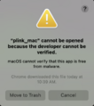

Preworkshop Testing
Downloading materials
By clicking the link, then the download (down-arrow) icon at the top of the screen. If a message comes up that the file can't be scanned for viruses, please click "download anyway".
You should already have a folder in your home directory named prsworkshop that you created during the terminal part of this guide by typing "mkdir ~/prsworkshop". If you haven't created this folder, please do so now. Next, move to this directory by typing:
cd ~/prsworkshop
Next unzip the downloaded workshop materials and move them to this directory. This can be down by right clicking on the folder to unzip and then dragging it into the prsworkshop folder, or it can be done in the terminal. In Linux this is accomplished by typing:
tar -xvzf ~/Downloads/preworkshop_materials_linux.tar.gz -C ~/prsworkshop
cd ~/prsworkshop/preworkshop_materials_linux
MacOs safari sometimes unzips downloaded files for you, so macOs users should first type the following:
ls ~/Downloads/preworkshop_materials_mac.*
If the command returns a file with a ".tar" ending, then type:
tar -xvf ~/Downloads/preworkshop_materials_mac.tar -C ~/prsworkshop
Otherwise, if the command returns a file with a ".tar.gz" ending, type:
tar -xvzf ~/Downloads/preworkshop_materials_mac.tar.gz -C ~/prsworkshop
To unzip the folder and move it to the appropriate directory. Finally, move to the appropriate directory to begin testing:
cd ~/prsworkshop/preworkshop_materials_mac
Testing Software
Warning For macOs Users:

MacOs often block executables if they are not approved from the app store. If you see an error similar to this, when trying to run plink, PRSice, or bridgePRS, DO NOT DELETE THE FILE. You must change your system settings to allow downloaded software. To learn how to do so, please click here.
Plink
From the preworkshop directory, navigate into the Plink directory.
cd Plink
and type the following command:
./code/plink -h
If no error is observed and a list of options are displayed then your computer is ready to run plink. If you are not already familiar with plink, now is a great time to use the data found in Plink/tutorials/sample_data/ to run the PLINK tutorial.
Testing PRSice
Please navigate to the correct directory:
cd ~/prsworkshop/preworkshop_materials_(mac/linux)/PRSice
and type the following command:
./code/PRSice -h # macOs users
If no error is observed and a list of options are displayed then your computer is ready to run PRSice.
Testing bridgePRS
To verify that bridgePRS is able to run navigate to the folder:
cd ~/prsworkshop/preworkshop_materials_(mac/linux)/BridgePRS
and type the command:
./bridgePRS
You should see bridge art. If this command works, then type the following command:
./bridgePRS tools check-requirements
To confirm that your system is up to date, all libraries are installed and you are ready to run bridgePRS.